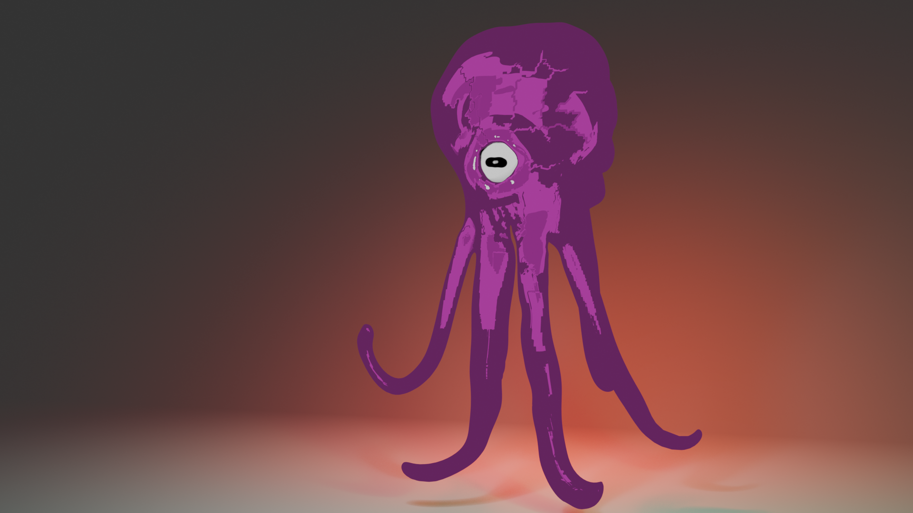

La exposición
Cuatro salas. Cada una está organizada según el tipo de obra que contiene. ¿Prefieres una lista? Salta al índice.

JA-01
Biopunk
Un mundo con hambre
Un mundo sin presencia humana, donde un ecosistema se desarrolla en sus propios términos: criaturas, hábitats y las relaciones entre ellos.
Abrir la guía de campo
- construcción de mundos
- criaturas
- ecosistemas

JA-02
Golden Tec
Instalación audiovisual
Instalación interactiva que combina cortometraje, recursos audiovisuales y tecnologías digitales para explorar críticamente los efectos de la hiperconectividad en la identidad y las emociones de niños y jóvenes. A través de la experiencia de Alejandro, la obra invita a reflexionar sobre la paradoja de estar siempre conectados y, al mismo tiempo, experimentar aislamiento y desconexión emocional.
[[projects.golden-tec.verb]]
- animación
- instalación
- audiovisual

JA-03
Ira
Serie de pinturas
Una serie de pinturas conectada con la declaración artística. Las pinturas van primero; la interfaz se mantiene fuera de su camino.
Entrar a la galería
- pintura
- serie
- declaración

JA-04
Exploraciones independientes
Proyectos pequeños, sin universo compartido
Obras independientes y proyectos pequeños que pueden estar conectados o no. Cada entrada se sostiene por sí sola.
Ver las fichas
- arte conceptual
- personajes
- vehículos
- experimentos
Índice
Todo en un solo registro. Busca por título o filtra por tipo.
| N.º | Título | Tipo | Clase | Año |
|---|---|---|---|---|
| JA-01 | BiopunkUn mundo con hambre | Construcción de mundos | Proyecto principal | — |
| JA-02 | Golden TecInstalación audiovisual | Animación / Instalación | Proyecto principal | 2025 |
| JA-03 | IraSerie de pinturas | Pintura | Proyecto principal | — |
| JA-04 | Exploraciones independientesProyectos pequeños, sin universo compartido | Mixto | Proyecto principal | — |
| JA-04.1 | Volkswagen Transporter t2 VanUn diseño de vehículo inspirado en la estética de Mad Max. | Diseño de vehículos | Exploración | 18/06/2026 |
| JA-04.2 | Ángel alquimistaUn pequeño proyecto de arte conceptual protagonizado por un ángel alquimista. | Arte conceptual | Exploración | — |
Nada coincide con esa búsqueda. Borra la búsqueda o elige Todos.